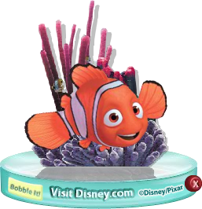
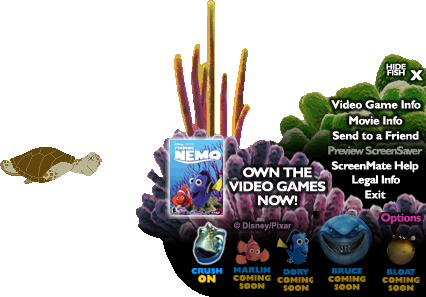
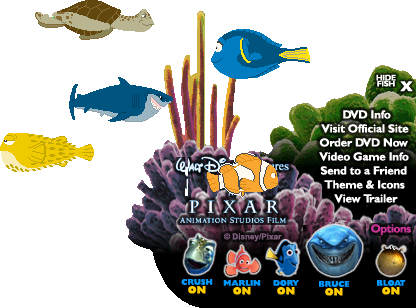
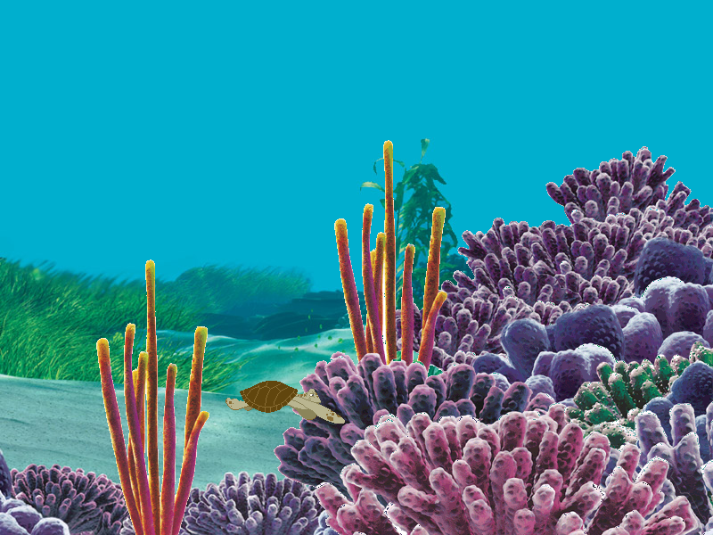

Finding Nemo Widgets

Finding Nemo Bobblehead

Note: This program has only been tested on Windows XP. It is unknown if the Windows build will run on modern platforms.
DOWNLOAD
 .exe file zipped (Windows) (278 KB)
.exe file zipped (Windows) (278 KB)
.sit file (Mac OS) (427 KB)
Finding Nemo ScreenMate
Comes with 2 versions, and doubles as a screensaver.



DOWNLOAD
.exe file zipped (version 1) (1.93 MB)
.exe file zipped (version 2) (2.11 MB)